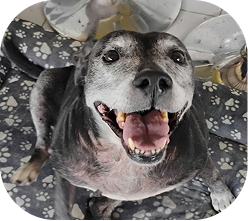
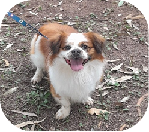

Dara
15 AnosCom um sorriso que ilumina qualquer ambiente, Dara é uma senhorinha dócil e cheia de alegria. Ela precisa de apoio com seus cuidados de rotina e sonha com um sofá quentinho para chamar de seu.
Adotar →
Com um sorriso que ilumina qualquer ambiente, Dara é uma senhorinha dócil e cheia de alegria. Ela precisa de apoio com seus cuidados de rotina e sonha com um sofá quentinho para chamar de seu.
Adotar →
Pequeno no tamanho, mas gigante no carinho! Maylon adora passear, fazer amizade e receber atenção. Ajude a manter suas vacinas e banhos em dia enquanto ele aguarda uma família para amar.
Adotar →
Um gatinho tranquilo que é especialista em tirar boas sonecas e distribuir ronronados. Seu apadrinhamento garante a ração e os cuidados veterinários que ele precisa até encontrar seu lar definitivo.
Adotar →